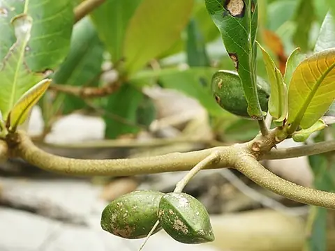

Indian almond
Indian almond is a wild nut you can forage from July to December in South India, East and West coast and Deccan. Avenue and coastal tree with big leaves that turn red, and almond-shaped fruit.

When is Indian almond in season in India?
Indian almond is usually in season July to December. Timing shifts with weather, latitude and altitude.
Where does Indian almond grow in India?
Indian almond grows in Andaman and Nicobar Islands, Andhra Pradesh, Bihar, Dadra and Nagar Haveli and Daman and Diu, Goa, Gujarat, Jharkhand, Karnataka, Kerala, Lakshadweep, Maharashtra, Odisha, Puducherry, Tamil Nadu, Telangana, West Bengal. Regions: South India, East, West coast and Deccan.
How do you recognise Indian almond?
Avenue and coastal tree with big leaves that turn red, and almond-shaped fruit.
How do you harvest Indian almond?
Collect ripe fallen fruit, nuts or cones from the ground. Dry them before cracking.
How do you eat Indian almond?
Crack the hard shell and eat the small kernel.
How do you store Indian almond?
Dry the fruit whole and crack as needed.
What is Indian almond good for?
Fat, Protein.